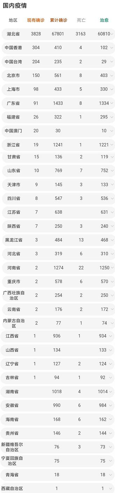

3.25疫情数据（国内，全球，欧洲）皇家墨尔本医院建议

来自我在皇家墨尔本皇家医院工作的朋友。
FYI
亲爱的朋友们，这是给医院工作人员的建议。解释病毒以及如何预防病毒。请与家人，朋友和同事分享。干杯乔斯
给RBH（皇家布里斯班医院）工作人员的内部电子邮件：
病毒检测：
区分冠状病毒和普通感冒的最简单方法是，COVID-19感染不会引起感冒或感冒引起的咳嗽，但会引起干燥和粗糙的咳嗽。
通常首先将病毒安装在喉咙中，引起发炎和干燥感。此症状可能会持续3到4天。
然后，病毒通常会通过气道中的水分传播，下降到气管并在肺部安装，导致肺炎持续约5或6天。
肺炎表现为高烧和呼吸困难。普通感冒没有伴随，但可能会有窒息感。在这种情况下，应立即致电医生。
专家建议每天早晨进行一次简单的验证：深呼吸，屏住呼吸10秒钟。如果可以不咳嗽而毫无困难地做到这一点，则表明肺部没有纤维化，表明没有感染。建议每天早晨进行此控制，以帮助检测感染。
预防：
如果暴露于高于80°F（27°C）的温度下，病毒会讨厌并死亡。因此，白天应大量饮用热饮料，例如输液，肉汤或简单的热水。这些热液体会杀死病毒，很容易被摄入。
避免喝冰水或冰块饮料。
确保您的嘴和喉咙总是湿的，不要干。您应该至少每15分钟喝一口水。为什么？即使病毒通过口腔进入水或其他液体中，也会通过食道直接冲入胃中，在那里胃酸会破坏病毒。如果没有足够的水，病毒可能会进入气管并从那里到达肺部，这是非常危险的。
对于那些谁可以，享受日光浴。太阳的紫外线可以杀死病毒，维生素D对您有益。
冠状病毒的大小很大（直径为400-500纳米），因此口罩可以阻止它，在日常生活中不需要特殊的口罩。
如果被感染的人在我们附近打喷嚏，请保持10英尺（3.3米）远，以使病毒掉落到地面上并防止其落到您身上。
当病毒在坚硬的表面上时，它可以存活约12个小时，因此在门，电器，栏杆等坚硬的表面上也可以存活。触摸后，应彻底洗手和/或用酒精凝胶消毒
该病毒可在6到12个小时之间生活在衣服和组织中。普通洗涤剂会杀死它。无法清洗的东西应暴露在阳光下，病毒会死亡。
病毒的传播通常通过直接感染，接触存在病毒的织物，组织或材料而发生。
洗手至关重要。
该病毒只能在我们手上存活约10分钟。在那段时间里，可能发生很多事情，揉眼睛，触摸鼻子或嘴唇。这使病毒进入您的喉咙。因此，为了您和所有人的利益，请经常洗手并消毒。
您可以漱口消毒液（例如，Listerine或过氧化氢）以消除或减少可进入喉咙的病毒量。这样做可以在病毒进入气管然后进入肺部之前将其清除。
消毒经常触摸的东西：手机，键盘，鼠标，汽车方向盘，门把手等
乔斯
立即发送给我们+我们想与大家分享这些知识和建议。请做同样的事情。
以下是英文原版：
From My friend who works at Royal Melbourne hospital in HR. tonight .
FYI
Dear Friends, this is advice given to hospital staff. Explains the virus and how to prevent the virus. Please share with family , friends and work colleagues. Cheers Jos
Internal email for RBH (Royal Brisbane Hospital) staff:
Virus Detection:
The simplest way to distinguish Coronavirus from a Common Cold is that the COVID-19 infection does not cause a cold nose or cough with cold, but it does create a dry and rough cough.
The virus is typically first installed in the throat causing inflammation and a feeling of dryness. This symptom can last between 3 and 4 days.
The virus typically then travels through the moisture present in the airways, goes down to the trachea and installs in the lungs, causing pneumonia that lasts about 5 or 6 days.
Pneumonia manifests with a high fever and difficulty breathing. The Common Cold is not accompanied, but there may be a choking sensation. In this case, the doctor should be called immediately.
Experts suggest doing this simple verification every morning: Breathe in deeply and hold your breath for 10 seconds. If this can be done without coughing, without difficulty, this shows that there is no fibrosis in the lungs, indicating the absence of infection. It is recommended to do this control every morning to help detect infection.
Prevention:
The virus hates heat and dies if it is exposed to temperatures greater than 80°F (27°C). Therefore hot drinks such as infusions, broths or simply hot water should be consumed abundantly during the day. These hot liquids kill the virus and are easy to ingest.
Avoid drinking ice water or drinks with ice cubes.
Ensure that your mouth and throat are always wet, never DRY. You should drink a sip of water at least every 15 minutes. WHY? Even when the virus enters water or other liquids through the mouth, it will get flushed through the oesophagus directly into the stomach where gastric acids destroy the virus. If there is not enough water, the virus can pass into the trachea and from there to the lungs, where it is very dangerous.
For those who can, sunbathe. The Sun's UV rays kill the virus and the vitamin D is good for you.
The Coronavirus has a large size (diameter of 400-500 nanometers) so face masks can stop it, no special face masks are needed in daily life.
If an infected person sneezes near us, stay 10 feet (3.3 meters) away to allow the virus fall to the ground and prevent it from falling on you.
When the virus is on hard surfaces, it survives about 12 hours, therefore when hard surfaces such as doors, appliances, railings, etc. are touched, hands should be washed thoroughly and/or disinfected with alcoholic gel
The virus can live nested in clothes and tissues between 6 and 12 hours. Common detergents can kill it. Things that cannot be washed should be exposed to the Sun and the virus will die.
The transmission of the virus usually occurs by direct infection, touching fabrics, tissues or materials on which the virus is present.
Washing your hands is essential.
The virus survives on our hands for only about 10 minutes. In that time many things can happen, rubbing the eyes, touching the nose or lips. This allows the virus to enter your throat. Therefore, for your good and the good of all, wash your hands very often and disinfect them.
You can gargle with disinfectant solutions (i.e. Listerine or Hydrogen Peroxide) that eliminate or minimize the amount of virus that can enter the throat. Doing so removes the virus before it goes down to the trachea and then to the lungs.
Disinfect things touched often: cellphone, keyboard, mouse, car steering wheel, door handles, etc
Jos
Sent to us just now + we wanted to share this knowledge & advice with you all. Pls do the same.
- 上一篇：“血浆疗法”，能打败新冠病毒吗？ 2020/5/19
- 下一篇：冠状病毒存活体内37天，塑料3天，包裹有毒？如何杀“毒” 2020/3/19